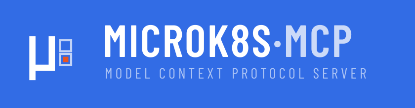

Run your MicroK8s cluster from a conversation
microk8s-mcp is an open-source MCP server that gives Claude Code a safe,
typed window into your Kubernetes cluster. Ask what is broken and get a real answer,
backed by real kubectl calls — without pasting a single credential into a chat.
What it does
MicroK8s is a small, complete Kubernetes distribution that runs happily on one machine.
It is a great home for a homelab, a build server, or a staging cluster. What it does not
give you is a good way to ask questions about itself — the answers live behind a
dozen kubectl invocations that you have to remember and assemble.
microk8s-mcp closes that gap. It is a Model Context Protocol server: a small program that Claude Code launches and talks to over stdin, exposing your cluster as a set of tools it can call. You ask a question in English; Claude picks the right tools, runs them against your cluster, and reports back with actual output.
Investigate
Node health, pod status, logs, events, resource usage and rollout state — across every namespace, in one question.
Operate
Scale workloads, restart rollouts, apply manifests and manage MicroK8s addons — once you deliberately unlock writes.
Stay in control
Read-only out of the box, a purpose-built ServiceAccount, no Secret access, and no shell. Every command is logged.
What it looks like in practice
Once it is registered, you do not run commands — you ask questions:
> why is the ingress in the apps namespace throwing 502s?Claude calls list_resources to find the ingress and its backing service,
describe_resource on the endpoints that turn out to be empty,
get_logs on the one pod that is crash-looping, and tells you that the
container is exiting on a missing environment variable — with the log lines to prove it.
That is four tools and about ten seconds, and you never left the terminal.
Other things worth asking:
- "Give me a health report for the cluster." — there is a built-in prompt for this.
- "Which pods have restarted more than five times today?"
- "Triage the staging namespace."
- "Scale the web deployment to 3 replicas" — if you enabled write mode.
Quick start
Three commands from your workstation, with MicroK8s running on another machine. Nothing is installed on the node:
git clone https://github.com/pierrejochem/microk8s-mcp && cd microk8s-mcp
make install
make node-setup SSH_HOST=you@your-node
make register SSH_HOST=you@your-nodeRestart Claude Code, run /mcp, and the tools are there. The
installation guide explains each step, the prerequisites,
and what to do when your setup differs.
Prerequisites: Python 3.10 or newer, a running MicroK8s cluster, and
the claude CLI. A local kubectl is strongly recommended — see
why it matters.
Where it runs
The server has two backends, and you can use either or both.
The kubectl backend talks to the Kubernetes API server over the network
using a kubeconfig. It drives every kubectl-level tool. The
node backend runs microk8s ... on the node itself for addon
management and snap-level status — locally if the server sits on the node, otherwise over SSH.
A) workstation microk8s node
claude CLI ── stdio ── mcp server ── :16443 ── kube-apiserver
└─ ssh ───── microk8s snap
B) workstation microk8s node
claude CLI ── ssh ──────────────────────────── mcp server ── localhostTopology A is the better default. The server runs on your workstation,
holds a scoped kubeconfig, and only needs SSH for addon commands. Skip the SSH setup entirely
and everything still works except microk8s_status and manage_addon.
How it stays safe
Handing a language model access to a Kubernetes cluster deserves some care. The design takes that seriously:
- Read-only by default. Mutating tools refuse to run until you start
the server with
MICROK8S_MCP_MODE=read-write. - Its own identity. You mint a kubeconfig for a purpose-built
claude-mcpServiceAccount, not your admin credential. - No Secret access. The bundled RBAC role grants get/list/watch on everything except Secrets, so cluster credentials cannot end up in a model context.
- No exec, no port-forward, no shell. An exec tool would be arbitrary code execution in your cluster driven by model output. It is deliberately absent.
- No bulk deletes.
delete_resourcetakes one kind and one name, requiresconfirm=True, and has no selector path. - No shell interpolation. Commands are built as argument lists, never strings, and every name is validated against a strict pattern.
The security model page explains the two enforcement layers, which one actually binds, and how to verify what your credential can really do.
Before you apply rbac.yaml: as shipped, it grants
cluster-wide write access. That is a deliberate default for a homelab, and the wrong one
for anything you care about. Read this first.
Where to go next
Installation
Prerequisites, both topologies, minting a scoped credential, and registering with the CLI.
Configuration
Every environment variable, what it defaults to, and which ones actually gate behaviour.
Tool reference
All 16 tools and 2 prompts, with arguments and what each one runs underneath.
Troubleshooting
The errors people actually hit, and what each one means.